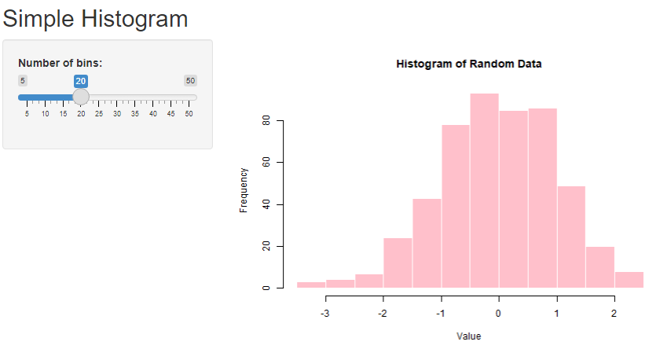
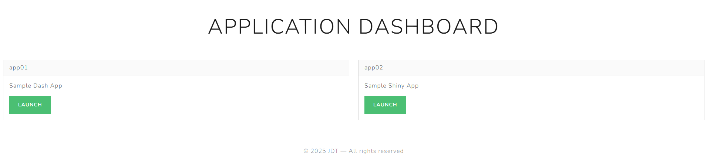

In this post, we’ll walk through the setup of an application server on a RHEL9 virtual machine to host multiple Dash and Shiny applications. While I found several guides that covered 60-70% of what I was looking to do, none fully matched what I needed. This setup checks all the boxes:
- Runs on a RHEL9 virtual host.
- Uses NGINX as a reverse proxy.
- Hosts both Dash and Shiny apps each in its own Docker container. Dash apps use gunicorn WSGI HTTP server.
- Routes each app to its own path (e.g.,
/app01/,/app02/) - Includes a landing page at the root (
/) as the main entry point to the server.
Throughout the post, we assume the fully-qualified domain name of the server is myserver.com, but this should be replaced with your own FQDN (run hostname -f from bash to find out what it is). Specifically, we will go through the steps of building and running three separate Docker containers:
- A simple Dash application, served at myserver.com/app01/.
- A simple Shiny application, served at myserver.com/app02/.
- A landing page (also a Dash application) accessible at the server root, myserver.com/, with redirects to app01 and app02.
Once the containers are running, we’ll demonstrate how to configure NGINX to allow access at each of the above referenced paths.
The repository with all supporting artifacts is available here.
Install Dependencies
Ensure Docker, the Docker Compose plugin and NGINX are installed. First install and update the EPEL repository:
$ sudo yum install epel-release
$ sudo yum updateInstall NGINX:
$ sudo yum install nginxVerify the installation:
$ sudo nginx -v
nginx version: nginx/1.20.1To install Docker, follow the instructions here.
Finally, install the Docker Compose plugin:
$ sudo yum install docker-compose-pluginapp01: Simple Dash Application
Python Dash is a framework for building interactive web applications using Python. It’s ideal for data visualization and dashboards. Dash combines Flask on the backend with Plotly for charts and React.js for components, all without requiring knowledge of HTML, CSS, or JavaScript.
Referring to the repository linked above, the app01 sub-directory contains:
app.py: Dash application code.wsgi.py: Defines the WSGI application object that Gunicorn uses to run and serve the Python web app.requirements.txt: Dependencies for Dash application.Dockerfile: Defines how to build a Docker image by specifying instructions, dependencies and configurations.
docker-compose.yml: A configuration file that defines and manages Docker applications specifying services. Builds the Docker image and runs the container in single command.
The Web Server Gateway Interface (WSGI) is a Python standard that allows web servers to communicate with Python web applications. It acts as a bridge, enabling servers like Gunicorn to run applications built with frameworks like Flask and Django in a standardized, interoperable way. Gunicorn is included as a dependency in requirements.txt.
Our sample Dash app looks like the following:

The contents of app01/app.py:
# app01/app.py
import dash
from dash import dcc, html, Dash, Input, Output
import dash_bootstrap_components as dbc
import plotly.express as px
import pandas as pd
# Sample dataset.
df = pd.DataFrame({
'Fruit': ['Apples', 'Bananas', 'Cherries', 'Dates'],
'Sales Q1': [30, 45, 10, 20],
'Sales Q2': [40, 30, 15, 25]
})
app = Dash(
__name__,
external_stylesheets=[dbc.themes.BOOTSTRAP],
url_base_pathname="/app01/"
)
app.layout = dbc.Container([
html.H3("Fruit Sales by Quarter", className="my-3"),
dcc.Dropdown(
id='quarter-dropdown',
options=[{'label': col, 'value': col} for col in df.columns if col != 'Fruit'],
value='Sales Q1',
clearable=False,
className="mb-4"
),
dcc.Graph(id='sales-chart')
], className="p-4")
@app.callback(
Output('sales-chart', 'figure'),
Input('quarter-dropdown', 'value')
)
def update_chart(selected_col):
fig = px.bar(df, x='Fruit', y=selected_col, title=f"{selected_col} per Fruit", labels={'y': 'Sales'})
return fig
server = app.server
if __name__ == '__main__':
app.run(debug=True)In the
Dashconstructor, we includeurl_base_pathname="/app01/"to indicate the application should be served at a location other than root. This also needs to be specified in the NGINX configuration file.Just before
if __name__ == '__main__', we haveserver = app.server. I’m not sure what this actually does, but the app will not be render correctly unless it is included.
The contents of app01/Dockerfile:
# app01/Dockerfile
FROM python:3.12
WORKDIR /app
RUN pip install --upgrade pip
COPY requirements.txt .
RUN pip install --no-cache-dir --upgrade -r requirements.txt
COPY . .
CMD ["gunicorn", "--bind", "0.0.0.0:8050", "wsgi:server"]FROM python:3.12: Specifies the base image, which is the official Python 3.12 image from Docker Hub. This sets up a Python environment for app01.WORKDIR /app: Sets the working directory inside the container to /app. All subsequent commands will run relative to this directory.RUN pip install --upgrade pip: Upgrades pip to the latest version inside the app01 container.COPY requirements.txt .: Copies requirements.txt file from the local machine into the /app directory of the app01 container.RUN pip install --no-cache-dir --upgrade -r requirements.txt: Installs app01 dependencies listed in requirements.txt.COPY . .: Copies all files from your current local directory to the /app directory in the app01 container.CMD ["gunicorn", "--bind", "0.0.0.0:8050", "wsgi:server"]: Specifies the default command to run when the container starts. It launches the Gunicorn WSGI server, binding to port 8050 and usingwsgi:server(i.e.,serverobject from wsgi.py).
The Dockerfile for the landing page is identical to the one for app01. In either case, we won’t work with the Dockerfile directly since we’ll be using Docker Compose to manage building and running our containers.
The contents of app01/docker-compose.yml:
services:
app:
build: .
container_name: dash-app01
restart: unless-stopped
ports:
- "9001:8050"
volumes:
- .:/app
environment:
- PYTHONUNBUFFERED=1The running container will be named dash-app01. If we didn’t specify a name, Docker would assign one randomly. For ports, "9001:8050" specifies that the container port 8050 will be published to port 9001 on the host. To build the app01 image and run the container, execute the following from bash:
$ cd app01
$ sudo docker compose up --build -dThis should only take a minute or so. Upon completion, we can check that the dash-app01 container is up and running with docker ps:
$ sudo docker ps
CONTAINER ID IMAGE COMMAND CREATED STATUS PORTS NAMES
ba48864f904a app01-app "gunicorn --bind 0.0…" 4 seconds ago Up 3 seconds 0.0.0.0:9001->8050/tcp, [::]:9001->8050/tcp dash-app01If something is misconfigured, you may see a message like “container is restarting…” under the STATUS column. This typically indicates an issue with the application or its supporting files. Make sure the app runs correctly in your local environment before deploying with Docker.
At this stage, the application will not be accessible at myserver.com/app01 since we haven’t configured NGINX. We’ll set up the NGINX routing for all three applications together once each container is up and running.
app02: Simple Shiny Application
Shiny is a framework for building interactive web apps straight from R. It lets you create dynamic visualizations without working with HTML or JavaScript directly, making it a go-to tool for data scientists and analysts who want to share insights in a more engaging way.
The app02 subdirectory contains the following artifacts:
app.RDockerfiledocker-compose.yml
The contents of app02/app.R, a random histogram generator:
library("shiny")
ui = fluidPage(
titlePanel("Simple Histogram"),
sidebarLayout(
sidebarPanel(
sliderInput("bins", "Number of bins:", min=5, max=50, value=20)
),
mainPanel(plotOutput("histPlot"))
)
)
server = function(input, output) {
output$histPlot = renderPlot({
data = rnorm(500)
hist(data, breaks=input$bins, col="pink", border="white",
main="Histogram of Random Data", xlab="Value")
})
}
shinyApp(ui=ui, server=server)Here’s what app02 looks like once it is up and running:

The contents of app02/Dockerfile:
FROM rocker/shiny:latest
# Install additional R packages.
RUN install2.r --error data.table foreach
# Copy app code to the Docker image.
COPY app.R /srv/shiny-server/
# Change permissions for shiny app.
RUN chown -R shiny:shiny /srv/shiny-server
EXPOSE 3838
CMD ["/usr/bin/shiny-server"]FROM rocker/shiny:latest: Uses the official rocker/shiny base image, which includes R, the Shiny server, and necessary defaults to host Shiny apps.RUN install2.r --error data.table foreach: Installs thedata.tableandforeachpackages inside the container usinginstall2.r(a helper script included in Rocker images). The--errorflag ensures the build fails if installation fails. Note that no additional libraries are required for app02, but I wanted to demonstrate how to include additional dependencies in the event they are needed for future projects.COPY app.R /srv/shiny-server/: Copies the local app.R file into the directory where the Shiny server expects apps to be.RUN chown -R shiny:shiny /srv/shiny-server: Changes ownership of the app directory and its contents to theshinyuser, which the Shiny server runs as.EXPOSE 3838: Declares that the container will listen on port 3838, the default port for Shiny apps.CMD ["/usr/bin/shiny-server"]: Specifies the command that runs when the container starts. This launches the Shiny server.
app02/docker-compose.yml contains the following:
services:
app:
build: .
container_name: shiny-app02
ports:
- "9002:3838"
restart: unless-stoppedThe running container will be named shiny-app02. For ports, "9002:3838" specifies that the container port 3838 will be published to port 9002 on the host. We build and run app02 the same way we did for app01:
$ cd app02
$ sudo docker compose up --build -dRunning docker ps now lists two containers:
$ sudo docker ps
CONTAINER ID IMAGE COMMAND CREATED STATUS PORTS NAMES
91bea43d9df2 app02-app "/usr/bin/shiny-serv…" 4 seconds ago Up 3 seconds 0.0.0.0:9002->3838/tcp, [::]:9002->3838/tcp shiny-app02
ba48864f904a app01-app "gunicorn --bind 0.0…" 59 seconds ago Up 59 seconds 0.0.0.0:9001->8050/tcp, [::]:9001->8050/tcp dash-app01Landing Page
The landing page serves as the primary entry point into the application server. We create a second Dash app which consists of a title and two buttons that redirect to app01 and app02. Here is landing/app.py:
# landing/app.py
import dash
from dash import html, Dash
import dash_bootstrap_components as dbc
app = Dash(__name__, external_stylesheets=[dbc.themes.LUX])
app.title = "Application Dashboard"
app.layout = dbc.Container([
dbc.Row([
dbc.Col(
html.Div([
html.H1("Application Dashboard", className="display-4"),
]),
width=12,
className="text-center my-5"
)
]),
dbc.Row([
dbc.Col(
dbc.Card([
dbc.CardHeader("app01"),
dbc.CardBody([
# html.H5("Application 2", className="card-title"),
html.P("Sample Dash App", className="card-text"),
dbc.Button("Launch", href="/app01/", color="success", external_link=True, target="_blank")
])
], className="mb-4"),
md=6
),
dbc.Col(
dbc.Card([
dbc.CardHeader("app02"),
dbc.CardBody([
# html.H5("Application 2", className="card-title"),
html.P("Sample Shiny App", className="card-text"),
dbc.Button("Launch", href="/app02/", color="success", external_link=True, target="_blank")
])
], className="mb-4"),
md=6
)
], className="mb-5"),
dbc.Row([
dbc.Col(html.Footer("© 2025 JDT — All rights reserved", className="text-center text-muted"), width=12)
])
], fluid=True)
server = app.server
if __name__ == "__main__":
app.run(debug=True)Here’s a look at our landing page:

A few things to note:
For each
dbc.Button,hrefpoints to the web server location at which the application will be available. For the app01 button,href="/app01/"means when the button is clicked, the application will navigate to myserver.com/app01 (this still needs to be configured with NGINX, which is handled in the next section).external_link=Trueensures that clicking the button opens the target URL using the browser’s default behavior.target="_blank"instructs the application to open a new tab when a button is clicked, instead of updating the current tab.
The landing subdirectory also has Dockerfile and docker-compose.yml. The only difference from app01 is within docker-compose.yml, we publish container port 8050 to the host port 9000 and name the container dash-landing:
# landing/docker-compose.yml
services:
app:
build: .
container_name: dash-landing
restart: unless-stopped
ports:
- "9000:8050"
volumes:
- .:/app
environment:
- PYTHONUNBUFFERED=1Building and running the container:
$ cd landing
$ sudo docker compose up --build -dWe now have three running containers:
$ sudo docker ps
CONTAINER ID IMAGE COMMAND CREATED STATUS PORTS NAMES
3b6e9461f54b landing-app "gunicorn --bind 0.0…" 14 seconds ago Up 13 seconds 0.0.0.0:9000->8050/tcp, [::]:9000->8050/tcp dash-landing
91bea43d9df2 app02-app "/usr/bin/shiny-serv…" 26 minutes ago Up 26 minutes 0.0.0.0:9002->3838/tcp, [::]:9002->3838/tcp shiny-app02
ba48864f904a app01-app "gunicorn --bind 0.0…" 27 minutes ago Up 27 minutes 0.0.0.0:9001->8050/tcp, [::]:9001->8050/tcp dash-app01Configuring NGINX
We need to make NGINX aware of our applications by specifying the ports over which they are running. We create a configuration file under /etc/nginx/conf.d/, which we name apps.conf. Any file in this directory with a .conf extension will be loaded into the primary NGINX configuration file located at /etc/nginx/nginx.conf:
# /etc/nginx/conf.d/apps.conf
server {
listen 80;
server_name _;
location / {
proxy_set_header Host $host;
proxy_set_header X-Real-IP $remote_addr;
proxy_set_header X-Forwarded-For $proxy_add_x_forwarded_for;
proxy_set_header X-Forwarded-Proto $scheme;
proxy_pass http://localhost:9000;
}
location /app01 {
proxy_set_header Host $host;
proxy_set_header X-Real-IP $remote_addr;
proxy_set_header X-Forwarded-For $proxy_add_x_forwarded_for;
proxy_set_header X-Forwarded-Proto $scheme;
proxy_pass http://localhost:9001;
}
location /app02 {
proxy_set_header Host $host;
proxy_set_header X-Real-IP $remote_addr;
proxy_set_header X-Forwarded-For $proxy_add_x_forwarded_for;
proxy_set_header X-Forwarded-Proto $scheme;
proxy_pass http://localhost:9002;
rewrite ^/app02/(.*)$ /$1 break;
}
}Much of the configuration is boilerplate. The proxy_pass parameter needs to be set for each app based on the port specified in each application’s docker-compose.yml:
- The first block corresponds the the landing page (
location /). Forproxy_pass, we specifyhttp://localhost:9000, since the dash-landing container is publishing to port 9000. - The second block corresponds to app01. For
proxy_pass, we specifyhttp://localhost:9001, since the dash-app01 container is publishing to port 9001. - The third block corresponds to app02. For
proxy_pass, we specifyhttp://localhost:9002, since the shiny-app02 container is publishing to port 9002. Note also the additionalrewriteparameter set to^/app02/(.*)$ /$1 break;. This is required to serve Shiny applications at a location other than root.
Save the changes to apps.conf, and check with NGINX to ensure the configuration is syntactically correct:
$ sudo nginx -t
nginx: [warn] conflicting server name "_" on 0.0.0.0:80, ignored
nginx: the configuration file /etc/nginx/nginx.conf syntax is ok
nginx: configuration file /etc/nginx/nginx.conf test is successfulYou’ll need to restart the NGINX service:
$ sudo systemctl restart nginx
$ sudo systemctl reload nginxFinally, navigating to myserver.com will take you to the landing page, from which you can navigate to any other linked application.
This approach can scale to any number of applications. It is also possible to serve Jupyter notebooks as standalone apps that might need to be shared with your team. This is a much more cost effective solution that using a product like Posit Connect, which costs many thousands of dollars per year for essentially the same functionality.